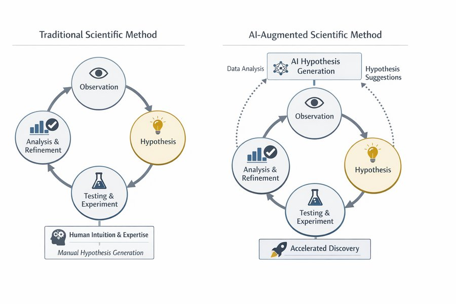
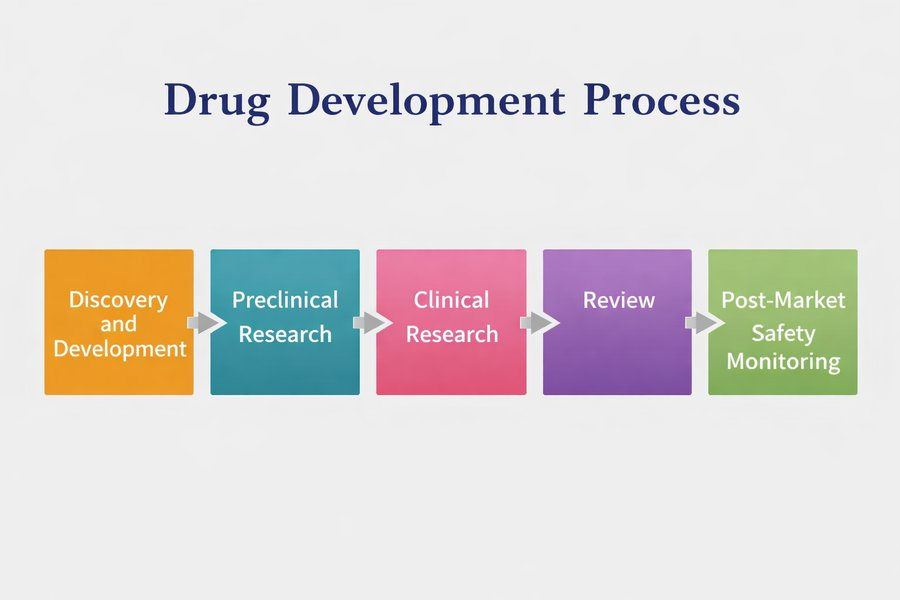
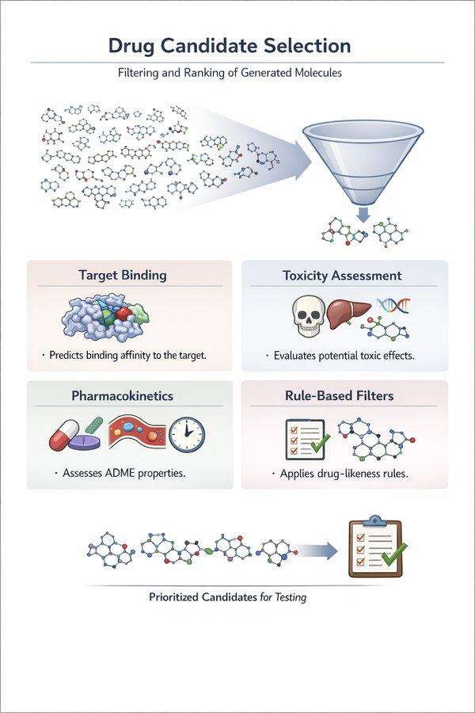
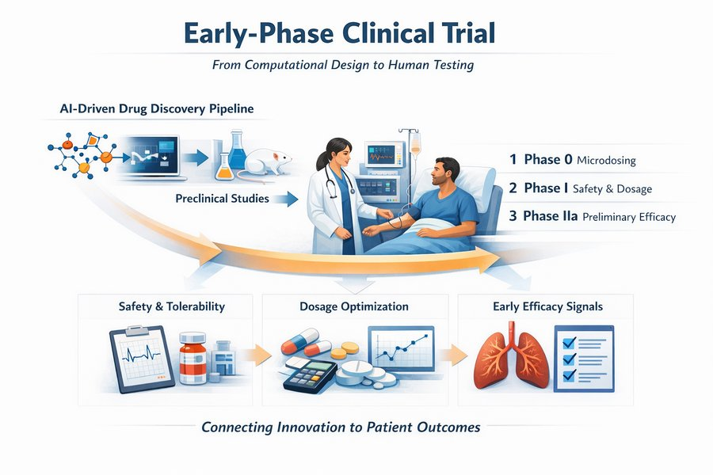

The hospital has started a pilot. On every computer in the intensive care unit there is now a guideline assistant: a box in which staff can type a question in plain English and receive an answer in a few seconds. Seán, the ward pharmacist, tries it tonight on a real problem. Mrs Aoife Byrne, 71, admitted with sepsis, is on vancomycin and piperacillin–tazobactam, and her creatinine has risen from 1.0 to 1.4 mg/dL in 36 hours. He types: “Should we change the vancomycin, and how often should we check creatinine?”
The answer arrives at once: six numbered points, confident, well written, with a journal reference at the end. Dr Emma Walsh, the intensivist, reads it over his shoulder. Most of it sounds right. One line does not: “stop vancomycin immediately and replace it with gentamicin”. And neither of them has ever heard of the journal.
Emma has used risk models all through this book to decide whether Aoife needs the kidney-protective bundle. A model gave her a number; she knew where it came from and how accurate it was. This is different. What is this system made of? When should Seán believe it? Who is responsible if he follows it, and was the hospital even allowed to install it? This chapter answers those questions.
Behind the guideline assistant are several different components. Label each one as part of the language model itself, the retrieval step that looks things up, a tool the system can call, or human oversight. Take your best guess; the chapter explains each term.
Component
Your label
A transformer trained on a huge collection of text to predict the next word.
A search over the hospital's guideline documents that returns the three most relevant paragraphs for each question.
A calculator that computes creatinine clearance with the Cockcroft–Gault equation when asked.
Seán checks every suggested dose before it is written on the chart.
Extra training in which people compared pairs of answers, so that the model learned to follow instructions politely and to refuse unsafe requests.
How to use this chapter
Starting here?
This chapter puts together ideas from many earlier chapters. In brief:
Decisions and decision quality (Definition 1.4, Section 1.5). A decision chooses one alternative from a set \(\mathcal{A}\) on the basis of a state of knowledge \(\mathcal{K}\). Decision quality is a chain of six links (frame, alternatives, information, values, reasoning, commitment), and a decision is only as strong as its weakest link. In Chapter 1 the Ward 7 team decided that the kidney-protective bundle is worth starting when Aoife’s risk of acute kidney injury (AKI) is above 0.25.
Machines check consistency, not truth (Section 1.6). A system that produces plausible text has not checked it against the world.
Text as vectors (Chapter 15). A document becomes a vector of word weights; with TF-IDF, words that are frequent in a document but rare in the collection weigh most, and two documents are compared with the cosine of the angle between their vectors.
Language models (Chapter 16). A language model gives a probability to every possible next token \(w_t\) given the tokens before it, \(P(w_t \mid w_{<t})\); it is trained by minimising the cross-entropy of the real next tokens and generates text by sampling, with a temperature that controls how adventurous the sampling is. Embeddings are learned vectors in which words with similar meanings lie close together.
The transformer (Chapter 17). Attention lets every position look at every earlier position; a stack of transformer blocks with a causal mask, trained to predict the next token, is a decoder-only model of the GPT family.
Transfer learning (Chapter 7): a network trained on one large dataset is fine-tuned on a smaller one. Calibration (Chapter 5): a model is calibrated if, among the cases to which it gives 80 %, about 80 % are positive. Abstaining (Chapter 8): a model that knows how uncertain it is can refer hard cases to a person.
Reinforcement learning (Chapter 14): an agent follows a policy\(\pi\) and learns from rewards. Randomised trials (Chapter 13) are the strongest evidence that a treatment works.
Example
Who or what
Outcome
Faces you will meet
1Ward 7 ICU
1 250 ICU patients in 4 hospitals
change in creatinine over 48 h (acute kidney injury if ≥ 0.3 mg/dL)
Aoife (71, sepsis, borderline risk), Tomás (54, low risk), Priya (38, high risk); Dr Emma Walsh; Seán, the pharmacist
2ONCO-1 trial
1 000 patients randomised to chemotherapy or not
tumour shrinkage (%)
patients #0042 and #0917
3HomeBeat
500 people wearing a smartwatch at home
stress score, deterioration event
Lena
4CellWorks
420 production batches of a cell therapy
potency score
batch CW-118
All four datasets are simulated and can be downloaded from the data appendix. The full introduction is in Section 1.1.
This chapter follows a language model out of the laboratory and into the ward. You will see how a next-word predictor is turned into an assistant, how prompts, retrieval and tools shape what it does, how to evaluate it and catch it inventing things, which laws apply to it, how AI helped to bring a new drug to a clinical trial, and where AI belongs in the decision-quality chain of Chapter 1. It has eleven sections and a Lab, eight quick checks, three “Try it” widgets, a challenge and three coding missions in R and Python. Allow about two hours. No language model runs in this chapter: every answer you will read was written in advance, and every number comes from small files you can download and check.
Notation at a glance (for lookup only)
Symbol
Meaning
Section
\(w_t\), \(w_{<t}\)
the token at position \(t\); all the tokens before it
Chapters 15 to 17 built a language model from the ground up: text became tokens and vectors, a model learned to give a probability to every possible next token, and the transformer made that model large and fast. Scaled up and trained on a large part of the written world, such a model can continue a sentence, summarise a document, answer a question or translate a paragraph, all by repeatedly computing \(P(w_t \mid w_{<t})\) and choosing a next token. Models of this kind are now called foundation models.
Definition 19.1 (Foundation model) A foundation model is a large model trained on broad data, usually by self-supervision at scale, that can be adapted to a wide range of downstream tasks (Bommasani et al. 2021). A large language model (LLM) is a foundation model for text; most current LLMs are decoder-only transformers (Chapter 17; Vaswani et al. (2017)) with billions of parameters.
A foundation model provides capability. It does not, by itself, provide what a ward needs: answers grounded in this hospital’s guidelines, exact arithmetic for a dose, a record of who asked what, a way to say “I don’t know”, and a person who checks before anything reaches a patient. Those come from the system built around the model (Figure 19.1): an interface that captures what the user wants, a workflow that decides the steps, access to external knowledge, tools, memory of the conversation, and monitoring.
Figure 19.1: From a foundation model to an application system. The model supplies general-purpose generation (text, summaries, answers, transformations); the system adds user intent, workflow orchestration, external knowledge, tools, memory and monitoring.
This distinction organises the whole chapter. A model predicts what is likely to come next; a system organises those predictions into behaviour that serves a purpose. Many of the failures that make headlines (fluent statements that are false, out-of-date facts, answers that cannot be checked) are not bugs in the transformer. They are what you should expect from a probabilistic text generator used without the structure around it (Thirunavukarasu et al. 2023). Seán’s assistant, as we will see, has a model at its heart; whether it is safe depends mostly on everything else.
19.2 How a foundation model is made
The model inside Seán’s assistant went through three stages of training (Figure 19.2). Each stage uses a different kind of data and changes the model’s behaviour in a different way.
Figure 19.2: The three stages that turn a transformer into an assistant model.
19.2.1 Stage 1: pretraining
Definition 19.2 (Pretraining, pretraining corpus and scaling laws)Pretraining fits a language model to a very large pretraining corpus (web pages, books, scientific articles, code) by minimising the cross-entropy of the next token, exactly the objective of Chapter 16: \[
\mathcal{L}_{\text{pre}}(\theta) = -\sum_{t} \log P_\theta(w_t \mid w_{<t}) .
\qquad(19.1)\]Scaling laws are the empirical finding that this loss falls smoothly and predictably, as a power law, as the number of parameters, the amount of data and the computing budget grow (Kaplan et al. 2020; Hoffmann et al. 2022).
Nothing in Equation 19.1 mentions medicine, truth or helpfulness. The model is rewarded for predicting what text usually comes next. To predict the next word of a pharmacology textbook well it must pick up a great deal of pharmacology, which is why large models “know” so much (Brown et al. 2020). But it also learns whatever is common in its corpus, including outdated practice, errors and prejudice, and it learns nothing at all about what happened after its corpus was collected. A base model that has only been pretrained does not answer questions; it continues text. Ask it “What is the first-line vasopressor in septic shock?” and it may well reply with three more exam questions, because that is what often follows such a line on the web.
19.2.2 Stage 2: instruction tuning
Definition 19.3 (Instruction tuning)Instruction tuning (supervised fine-tuning) continues training a pretrained model on a collection of prompts \(x\) paired with good responses \(y\) written by people, minimising the cross-entropy of the response tokens given the prompt, \(-\sum_{t \in y} \log P_\theta(w_t \mid x, w_{<t})\)(Wei, Bosma, et al. 2022; Ouyang et al. 2022).
The objective is the same as before; only the data change. A few thousand examples of the form “instruction → helpful answer” are enough to turn a text continuer into a model that does what it is asked, because the capability was already there and only the format of the behaviour has to be learned. This is transfer learning (Chapter 7) applied to behaviour.
19.2.3 Stage 3: preference tuning
People find it easier to say which of two answers is better than to write the perfect answer. Preference tuning exploits this. Human raters see a prompt \(x\) and two responses \(y_A\) and \(y_B\) and say which they prefer. A reward model\(r(x, y)\), itself a neural network, is trained so that preferred responses get higher scores, using the Bradley–Terry model of paired comparisons (Bradley and Terry 1952): \[
P(y_A \text{ preferred to } y_B \mid x) = \sigma\big(r(x, y_A) - r(x, y_B)\big),
\qquad(19.2)\] where \(\sigma\) is the logistic function of Chapter 5. The reward model is literally a logistic regression on the difference of two scores.
Then comes the step that gives the method its name. The language model is now seen as a policy\(\pi_\theta\) (Chapter 14): given a state (the prompt) it chooses actions (tokens) and, at the end of a response, receives a reward \(r(x, y)\). Reinforcement learning adjusts \(\theta\) to collect more reward, while a penalty keeps the new policy close to the instruction-tuned model \(\pi_{\text{ref}}\): \[
\max_\theta \;\; \mathbb{E}_{y \sim \pi_\theta(\cdot \mid x)}\big[r(x, y)\big] \;-\; \lambda\, \mathrm{KL}\big(\pi_\theta \,\|\, \pi_{\text{ref}}\big).
\qquad(19.3)\] The KL term (a measure of how different two probability distributions are (Kullback and Leibler 1951)) stops the model from drifting into strange text that happens to fool the reward model; \(\lambda\) sets how strongly.
Definition 19.4 (Preference tuning: RLHF and DPO)Reinforcement learning from human feedback (RLHF) trains a reward model on human comparisons of responses (Equation 19.2) and then optimises the language model, seen as a policy, to maximise that reward with a penalty for moving far from the starting model (Equation 19.3), usually with the PPO algorithm (Christiano et al. 2017; Schulman et al. 2017; Ouyang et al. 2022). Direct preference optimisation (DPO) reaches a similar result without a separate reward model or reinforcement learning, by fitting the policy directly to the comparisons with a logistic loss (Rafailov et al. 2023).
Preference tuning is why assistants are polite, structured and willing to say “consult a clinician”. It is also why they can be sycophantic and overconfident: raters tend to prefer answers that are fluent, complete and sure of themselves, and the model learns to give people what they reward (Sharma et al. 2024). Preference tuning shapes style and caution; it does not add knowledge the model lacked, and it does not make the model check facts.
The hospital’s guidelines were updated last month. Which training stage would teach the model the new guideline?
19.3 Prompting: steering without retraining
The simplest way to use a model is to give it a prompt and read the response. A prompt does not program the model in the classical sense: it defines no sequence of operations. It changes the context\(w_{<t}\) on which every next-token probability is computed, and so it reshapes the whole distribution from which the response is drawn. The same model behaves very differently depending on how the context is framed.
Definition 19.5 (Prompt, system prompt, few-shot and chain-of-thought prompting) A prompt is the text given to a language model as context for its response. Applications usually prepend a system prompt that the user does not see, setting the role, the rules and the format (“You are the Ward 7 guideline assistant. Answer only from the passages provided…”). Zero-shot prompting gives only the instruction; few-shot prompting adds a handful of worked examples of the task to the prompt (Brown et al. 2020); chain-of-thought prompting asks for, or demonstrates, intermediate reasoning steps before the answer (Wei, Wang, et al. 2022).
Take the request “Explain the role of TNF-alpha in inflammation.” With no further instruction the model produces a general explanation. “Explain the role of TNF-alpha in inflammation in three bullet points, for a first-year medical student” produces something shorter and simpler; “Summarise the role of TNF-alpha in inflammation using only mechanistic pathways” produces something denser. The task is the same; the framing moves the probability landscape. A few-shot prompt for Seán’s assistant might show two examples of a question, the guideline passage it rests on, and an answer that cites that passage, so that the model imitates the pattern.
Three facts about prompting matter in practice. First, outputs are sensitive to wording, to the order of the information and to the sampling temperature of Chapter 16: the same question asked twice can get two different answers, so any evaluation must use fixed prompts and repeated runs. Second, chain-of-thought text is not a window into how the answer was computed; it is more generated text, useful for checking but not guaranteed to be the real reason for the answer (Turpin et al. 2023). Third, a single prompt must carry both the task and the procedure, and as tasks grow it becomes fragile.
Prompt chaining addresses the third point by splitting a task into steps, each a separate call whose output feeds the next. Moving from explaining TNF-alpha to proposing a therapy, a chain might (1) produce a structured explanation of the pathway, (2) identify the points where the pathway could be blocked, (3) gather what is known about existing inhibitors and their clinical evidence, and (4) synthesise a proposal. Each intermediate output can be inspected, corrected or rejected, so an error can be located at the step where it arose instead of being buried in one opaque answer. Step 3, however, asks for facts, exactly what a language model on its own cannot guarantee. The next section shows how a system supplies them.
19.4 Retrieval-augmented generation
A language model’s knowledge is frozen in its parameters at the end of training, it cannot say where a fact came from, and it knows nothing about Ward 7’s local rules. The most widely used remedy is to look the facts up first and give them to the model together with the question (Lewis et al. 2020).
Definition 19.6 (Retrieval-augmented generation (RAG), chunk, retriever, grounding) In retrieval-augmented generation, a system answers a question in three steps: a retriever searches a collection of documents, split into short passages called chunks, and returns the \(k\) chunks most similar to the question; the chunks are inserted into the prompt with instructions to answer from them; the language model generates the answer (Lewis et al. 2020). An answer is grounded when every claim in it is supported by the retrieved passages, ideally with a citation to the passage that supports it.
Figure 19.3: Retrieval-augmented generation in the Ward 7 guideline assistant.
The retriever is not new to you. In Chapter 15 a document became a TF-IDF vector and two documents were compared with the cosine of the angle between their vectors (Spärck Jones 1972; Salton and Buckley 1988). RAG uses exactly that, with the question playing the role of a very short document. For each of the \(J\) chunks and each word \(w\), the weight is the word’s count in the chunk times its inverse document frequency, \(\mathrm{idf}(w) = \ln\!\big((1 + J)/(1 + \mathrm{df}(w))\big) + 1\), where \(\mathrm{df}(w)\) is the number of chunks that contain \(w\); rare words weigh more. The score of chunk \(j\) for the query is \[
\text{score}(\mathbf{q}, \mathbf{d}_j) = \frac{\mathbf{q} \cdot \mathbf{d}_j}{\lVert \mathbf{q} \rVert \, \lVert \mathbf{d}_j \rVert} ,
\qquad(19.4)\] and if every vector has been scaled to length 1 the score is just the dot product. Production systems often replace TF-IDF vectors by dense embeddings from a neural network (Chapter 16), so that “renal” can match “kidney” (Karpukhin et al. 2020), or combine the two; the logic of the pipeline is the same.
The Ward 7 assistant searches a small collection of 31 chunks from 11 local documents: the AKI bundle, the vancomycin and gentamicin guidelines, the sepsis guideline, a few procedures from the other running examples, and so on. The collection was written for this book to illustrate retrieval; it is not clinical guidance. You can read every chunk in the data file.
Inspect the retriever. Choose a question, or type your own, and see which chunks the TF-IDF retriever returns, with their cosine scores; the words that match the query are highlighted. Below, open the prompt that the system would send to the language model. Target: try at least three questions, including “What is the maximum dose of rentosertib?” (rentosertib is a drug we meet in Section 19.9; it appears nowhere in the guidelines). Look at what the retriever returns.
ragCorpus =FileAttachment("data/ch19_guidelines.csv").csv()ragIndex = {const stop =newSet(["a","an","and","are","as","at","be","by","can","do","does","for","from","has","have","how","i","if","in","is","it","its","not","of","on","or","our","should","so","that","the","their","them","then","there","these","they","this","to","was","we","what","when","which","while","who","will","with","without","you","been","into","than","after","before","more","most","also","all","any","every","each","may","only","other","such","whenever","where","one","two"]);const tok = s => s.toLowerCase().split(/[^a-z0-9]+/).filter(w => w.length>=2&&!stop.has(w));const docs = ragCorpus.map(d =>tok(d.section+" "+ d.text));const J = docs.length, df =newMap(); docs.forEach(ws =>newSet(ws).forEach(w => df.set(w, (df.get(w) ||0) +1)));const idf =newMap([...df].map(([w, n]) => [w,Math.log((1+ J) / (1+ n)) +1]));const vec = ws => {const v =newMap(); ws.forEach(w => { if (idf.has(w)) v.set(w, (v.get(w) ||0) +1); });let ss =0;for (const [w, c] of v) { const x = c * idf.get(w); v.set(w, x); ss += x * x; }const n =Math.sqrt(ss);if (n >0) for (const [w, x] of v) v.set(w, x / n);return v; };return {tok,vecs: docs.map(vec),query: q =>vec(tok(q))};}viewof ragPreset = Inputs.select(newMap([ ["Seán's question (opening scene)","Mrs Byrne is on vancomycin and piperacillin-tazobactam, and her creatinine rose from 1.0 to 1.4 mg/dL in 36 hours. Should we change the vancomycin, and how often should we check creatinine?"], ["How often should creatinine be checked while the bundle is active?","How often should creatinine be checked while the bundle is active?"], ["Should vancomycin be stopped when creatinine is rising?","Should vancomycin be stopped when creatinine is rising?"], ["Can gentamicin be used in acute kidney injury?","Can gentamicin be used in acute kidney injury?"], ["Which renal-protective medicines must be withheld?","Which renal-protective medicines must be withheld?"], ["Can a batch that failed the potency test be released?","Can a batch that failed the potency test be released?"], ["What is the maximum dose of rentosertib?","What is the maximum dose of rentosertib?"]]), {label:"Choose a question"})viewof ragQuery = Inputs.text({value: ragPreset,label:"…or edit it",width:560})viewof ragK = Inputs.range([1,5], {value:3,step:1,label:"Chunks retrieved, k"})ragHits = {const qv = ragIndex.query(ragQuery);const scored = ragCorpus.map((d, j) => {let s =0;for (const [w, x] of qv) s += x * (ragIndex.vecs[j].get(w) ||0);return {...d,score: s}; });return {qterms:newSet(qv.keys()),hits: scored.sort((a, b) => b.score- a.score).slice(0, ragK)};}{const esc = s => s.replace(/&/g,"&").replace(/</g,"<");const mark = t =>esc(t).replace(/[A-Za-z0-9]+/g, m => ragHits.qterms.has(m.toLowerCase()) ?`<mark>${m}</mark>`: m);const div =document.createElement("div"); div.innerHTML= ragHits.qterms.size===0?"<p><em>None of the words in this question appears in the guidelines: every score is 0.</em></p>": ragHits.hits.map((h, i) =>`<div style="border:1px solid var(--aihs-border);border-radius:8px;padding:0.45rem 0.7rem;margin:0.4rem 0"> <strong>${i +1}. [${h.chunk_id}]</strong> ${esc(h.document)}, <em>${esc(h.section)}</em> <span style="float:right">score <strong>${h.score.toFixed(3)}</strong> <span style="display:inline-block;width:80px;height:8px;border-radius:4px;background:var(--aihs-border);vertical-align:middle;overflow:hidden"> <span style="display:block;height:100%;width:${Math.min(100,100* h.score)}%;background:var(--aihs-accent)"></span></span></span> <div style="font-size:0.92em;margin-top:0.25rem">${mark(h.text)}</div></div>`).join("");return div;}
{const p = ["You are the Ward 7 guideline assistant. Answer ONLY from the numbered passages below.","Cite the passage id for every statement. If the passages do not contain the answer,","say that the guidelines do not cover it and suggest asking the ward pharmacist.",""].concat(ragHits.hits.map(h =>`[${h.chunk_id}] ${h.text}`)).concat(["","Question: "+ ragQuery]).join("\n");const det =document.createElement("details"); det.innerHTML="<summary>Show the prompt the system would send to the language model</summary>";const pre =document.createElement("pre"); pre.style.whiteSpace="pre-wrap"; pre.style.fontSize="0.85em"; pre.textContent= p; det.appendChild(pre);return det;}
ragSeen =newSet(){ ragSeen.add(ragQuery.trim().toLowerCase());const done = ragSeen.size>=3&& [...ragSeen].some(q => q.includes("rentosertib"));if (done &&window.aihs) window.aihs.complete("ch19-tryit-rag");returnhtml`<p style="font-size:0.92em">Questions tried: <strong>${ragSeen.size}</strong>${done ?". ✓ Checkpoint reached: now read the text below the widget.":""}</p>`;}
Three lessons come out of the inspector, and each is a failure mode of real RAG systems.
The retriever always returns something. For the rentosertib question, the top chunk is VAN-1 with a score of 0.497, higher than the score of the right chunk for the monitoring question (AKI-4, 0.343). It matches only because both contain the word dose. A score threshold alone cannot tell relevant from irrelevant; the instruction “if the passages do not contain the answer, say so” and a check of the answer against the passages have to do that work.
Words are not meanings.“Which renal-protective medicines must be withheld?” finds nothing useful (best score 0.130): the guideline says kidney, nephrotoxic, hold and pause, never renal-protective or withheld. Dense embeddings reduce this problem; they do not remove it.
What is not retrieved cannot be used. Choose Seán’s own question from the opening scene: the retriever returns VAN-5, VAN-4, LAB-2 but not the bundle’s monitoring rule (AKI-4), because Seán wrote check and the guideline says measured. An answer built on those passages will be silent, or wrong, about how often to measure creatinine.
Other failure modes do not show in a small collection: chunks from different versions of a guideline that contradict each other, a passage cut in the middle of a table, models that pay less attention to passages in the middle of a long prompt (Liu et al. 2024), and documents that contain hidden instructions addressed to the model, which it may obey, known as prompt injection(Greshake et al. 2023). RAG moves the problem of knowing to the problem of finding, and finding can be tested, which is its great advantage.
For the rentosertib question, the retriever returns a vancomycin passage with a fairly high score. What should a well-designed assistant do?
Be the retriever. The guideline chunks are already indexed: X holds one TF-IDF vector per chunk, each scaled to length 1, and embed() turns a question into a vector in the same space. Because all vectors have length 1, multiplying X by the query vector gives the cosine score of every chunk (Equation 19.4). Fill in the blank with the function that returns the position of the largest score, so that the last line prints the identifier of the best chunk.
The function’s name says it: which element is the maximum.
best <-which.max(scores)
numpy’s function is the argument of the maximum.
best =int(np.argmax(scores))
19.5 Tools, agents and protocols
Some steps should not be done by a language model at all. Seán’s question needs Aoife’s creatinine clearance, which is arithmetic (Cockcroft and Gault 1976); a model that predicts digits one token at a time can get arithmetic wrong, while a calculator cannot. Other steps need data the model does not have: today’s laboratory results, the current formulary, a drug-interaction database.
Definition 19.7 (Tool use and agent) In tool use, the language model does not compute an answer itself but writes a structured request, such as “call creatinine_clearance with age 71, weight 68 kg, creatinine 1.4 mg/dL, female”, which the system executes with ordinary, deterministic software; the result is put back into the context and the model continues (Schick et al. 2023). An agent is a system in which the model also decides, while the task unfolds, which step to take next (whether to retrieve, call a tool, split the task or stop), usually alternating short reasoning steps with actions (Yao et al. 2023).
Returning to the TNF-alpha chain of Section 19.3: checking that TNF-alpha is a validated target, listing known inhibitors with their clinical status or estimating a pharmacokinetic property are jobs for curated databases and calculators. The model’s role changes from producing the answer to coordinating a process that combines generation with deterministic computation and external knowledge.
The difference between a fixed chain and an agent is how much freedom the system has (Figure 19.4). A chain always runs the same steps in the same order: predictable, easy to test, sometimes wasteful. An agent adapts: it may decide it already knows enough, or that it must retrieve, calculate or break the task into subtasks; it may draft a plan, carry it out and check its own work.
Figure 19.4: Chained versus agentic workflows. A chain runs fixed steps in a fixed order; an agent decides at run time whether to retrieve, call a tool or split the task.
Freedom has a price. Plans can be poor; agents take unnecessary steps, repeat work or wander; self-checking is unreliable when the same model generates and judges; and small errors accumulate over many steps. Every tool an agent can call is also an action it can take wrongly, or be tricked into taking by text it reads (prompt injection again). In a hospital the rule of thumb is simple: the more an agent can do (write to the record, send an order, contact a patient), the narrower its permissions, the more complete its logs and the more certainly a person approves each consequential action.
Many agents, and the protocols that connect them. Complex tasks are sometimes divided among several specialised agents (one retrieves, one analyses, one drafts, one verifies), like a small team. Two open protocols, both introduced recently, standardise the connections (Figure 19.5). The Model Context Protocol (MCP) defines how an agent discovers and uses external capabilities, which it groups as resources (data), tools (actions and computations) and prompts (reusable templates), so that one hospital connector to, say, the formulary can serve any MCP-compatible assistant (Model Context Protocol 2026). Agent-to-agent protocols (A2A) define how agents from different vendors describe their skills to each other, delegate tasks and exchange results (A2A Project 2026). Neither decides what a system should do: MCP standardises access, A2A standardises conversation, and orchestration remains a design choice, and a responsibility.
Figure 19.5: Two complementary standards. Left: through the Model Context Protocol (MCP), agents reach shared resources, tools and prompts. Right: with agent-to-agent communication (A2A), specialised agents exchange information and tasks directly.
Multi-agent designs pay off when a task really divides into distinct roles; for most clinical questions a single, well-tested chain with retrieval and one or two tools is easier to evaluate, monitor and trust.
Where such systems are used. The same pattern, a model inside a workflow with retrieval and tools, appears wherever generative AI is deployed: natural-language questions translated into database queries and literature searches (Figure 19.6), code assistants that read a repository and run its tests, assistants that answer staff questions from internal documents, drafting of marketing or patient-information material under review. In health and the life sciences the list includes literature assistance, summarisation of clinical notes, pharmacological information, extraction of structured data from reports and analysis of adverse-event narratives (Thirunavukarasu et al. 2023). In every case the value comes less from the model than from the system it sits in.
Figure 19.6: From a question to a grounded answer: the system translates a natural-language question into queries over structured data and searches over documents, then aggregates and synthesises the results.
In Seán’s assistant, which job should be given to a tool rather than left to the language model?
19.6 Fine-tuning, distillation or retrieval?
Sometimes a general model is not enough even with good prompts and retrieval: the outputs must follow a strict reporting format, use a specialty’s conventions, or run on a hospital server instead of a vendor’s cloud. Then the model itself can be adapted.
Definition 19.8 (Fine-tuning, LoRA and distillation)Fine-tuning continues training a pretrained model on data from the target task or domain, so that the desired behaviour is built into its weights (Chapter 7). Updating every weight is costly; parameter-efficient methods update a small number. LoRA (low-rank adaptation) freezes each large weight matrix \(\mathbf{W}_0\) and learns a low-rank correction, \(\mathbf{W} = \mathbf{W}_0 + \mathbf{B}\mathbf{A}\), where \(\mathbf{B}\) is \(d \times m\), \(\mathbf{A}\) is \(m \times d\) and the rank \(m\) is much smaller than \(d\)(Hu et al. 2022). Distillation trains a smaller student model to imitate the outputs of a larger teacher, keeping much of its behaviour at a fraction of the cost (Hinton, Vinyals, and Dean 2015).
The arithmetic of LoRA shows why it is popular. For one weight matrix with \(d =\) 4096, full fine-tuning updates \(d^2 =\) 16 777 216 numbers; LoRA with rank \(m =\) 8 updates \(2dm =\) 65 536, about 0.4 % as many. Adapters for several tasks can be stored side by side and swapped on the same base model.
Fine-tuning and distillation act on the model; prompting, retrieval and tools act on how the model is used at the moment of the question (Figure 19.7). Fine-tuning makes a model behave differently; distillation makes a model behave similarly under tighter constraints: smaller, faster, able to run on site, which also helps to keep patient data inside the hospital.
Figure 19.7: Different levers. Prompting, retrieval (RAG) and tool integration change the context and tools available at inference time; fine-tuning adapts a base model with domain data, and distillation transfers a teacher’s behaviour to a smaller student.
Table 19.1: Which lever for which need. In practice systems combine several.
Need
Best first lever
Why
Facts that change (guidelines, formulary, today’s results)
Retrieval
Updating a document is instant and auditable; answers can cite their source
A fixed output format or house style
Prompting, then fine-tuning
A few examples in the prompt often suffice; fine-tune if they do not
Specialist vocabulary and conventions
Fine-tuning
Patterns spread over thousands of examples are hard to fit in a prompt
Exact computation, live data
Tools
Deterministic software is exact and testable
Cost, speed, running on site
Distillation (or a smaller fine-tuned model)
A smaller model is cheaper and can stay inside the hospital
A common mistake is to fine-tune a model on guidelines to “teach it the facts”. Fine-tuning is a poor way of storing facts: the model may blend old and new versions, cannot say where an answer came from, and must be retrained at every update. Facts go in documents; behaviour goes in weights.
The pharmacy wants every answer in the same structure (recommendation, guideline source, monitoring, when to escalate) and has 3 000 examples of good answers written by pharmacists. Prompting with two examples gives the right structure only about two times in three. What is the most sensible next step?
19.7 Evaluating an assistant
Every model in this book has been judged on data it had not seen, with a metric chosen for the decision (Section 1.9). The same discipline applies to a language-model system, with three complications: there is rarely a single right answer, the output is free text, and the same question can get different answers on different runs.
Definition 19.9 (Benchmark and real-world evaluation; rubric) A benchmark is a fixed public test set, such as multiple-choice questions from medical licensing examinations (Jin et al. 2021). Real-world evaluation tests the whole system on the tasks, documents and users of the setting where it will be deployed, and ideally measures its effect on decisions and outcomes. A rubric is a written scoring scheme that graders apply to each response: for example correctness, grounding (are the citations real and do they support the claims?), completeness, potential for harm, and whether the system abstained when it should have.
Benchmarks are useful for comparing models, and they are where the headlines come from: a language model tuned for medicine exceeded the pass mark on licensing-style questions in 2023 (Singhal et al. 2023). But an examination question arrives clean, complete and with four options. When models were instead given the information of real hospital cases step by step and asked to reach a diagnosis and plan, they performed worse than physicians, often did not follow guidelines, and changed their answers when the same information was presented in a different order (Hager et al. 2024). This is the shortcut-learning and external-validation lesson of Chapter 7 again: performance on a test set says little about performance on a different population of cases.
A credible local evaluation of Seán’s assistant therefore looks like this: a few hundred real questions collected from staff (with out-of-scope ones included on purpose), fixed prompts and settings, each response graded by two pharmacists with a rubric, disagreements resolved, and results reported per category with confidence intervals. Using another language model as the grader (LLM-as-a-judge) is cheaper, but such judges prefer longer answers, answers in the first position and answers in their own style, so they must themselves be validated against human graders (Zheng et al. 2023). And because the system can change (a new model version, a new prompt, an updated guideline), the evaluation is not done once: it is rerun after every change.
The file ch19_eval.csv holds a simulated evaluation of this kind: the same 150 staff questions answered by the language model alone (model_only) and by the model with retrieval (rag), each response graded for correctness and for unsupported claims. The numbers were invented to show typical patterns; they are not results of a real product.
Does retrieval reduce invented content? In ev, the column hallucinated is 1 when a response contains at least one claim not supported by the guidelines, and config says which system gave it. Fill in the blank so that the line computes the proportion of hallucinated responses separately for each configuration.
In this simulated evaluation, 42 % of the model’s answers on its own contained an unsupported claim (95 % confidence interval 34 % to 50 %), against 12 % with retrieval (8 % to 18 %); the proportion of correct answers rose from 57 % to 83 %. The intervals are Wilson intervals for a proportion (Wilson 1927), built on the binomial distribution of Chapter 2; with 150 questions they are 10 to 16 percentage points wide, which is why a serious evaluation needs hundreds of questions, not a handful of impressive examples. The out-of-scope questions are the most telling: the correct response to them is to abstain, and the model alone did so only 21 % of the time, against 58 % with retrieval and an explicit instruction to say when the guidelines do not cover a question.
19.7.1 Hallucination
Definition 19.10 (Hallucination) A hallucination is generated content that is fluent and plausible but not supported by the source the system was given or by the facts of the world (Ji et al. 2023). It is intrinsic when it contradicts the source, and extrinsic when it cannot be verified from the source, including invented references, numbers and quotations.
Hallucinations are not a malfunction that a patch will remove. They follow from what a language model is (Section 1.6): a system that produces the most plausible continuation, whether or not it is true. Retrieval, instructions to cite and abstain, and checks of each claim against its source reduce them; only a person who checks can catch the rest. Checking is a skill, and you can practise it.
The two outputs below were invented for this exercise to show typical errors; no real system produced them. Both answer Seán’s question about Aoife from the opening scene. Output A comes from a language model on its own; output B from the same model with retrieval, which returned the passages VAN-5, VAN-4, LAB-2. Judge every claim against the Ward 7 guideline passages in the box.
Illustrative output A: language model alone (invented)
Mrs Byrne meets the KDIGO criterion for acute kidney injury: her creatinine has risen by 0.4 mg/dL within 48 hours.
Vancomycin should be stopped immediately and replaced with gentamicin, which is safer for the kidneys.
The Ward 7 guideline recommends checking creatinine every 6 hours while the bundle is active.
Aim for vancomycin trough levels of 15–20 mg/L.
This approach is supported by Smith et al., Journal of Renal Pharmacotherapy (2019).
The combination of vancomycin with piperacillin–tazobactam is associated with a higher rate of kidney injury.
Illustrative output B: language model with retrieval (invented)
Do not stop vancomycin without discussing it with the microbiology team; the pharmacist should review the dose and interval within 24 hours and a new level should be taken [VAN-4].
Consider an alternative beta-lactam to piperacillin–tazobactam and monitor creatinine daily [VAN-5].
Mrs Byrne’s risk of needing dialysis is about 10 % [VAN-5].
Ward 7 guideline passages (from the book’s illustrative corpus)
[AKI-2] Acute kidney injury is defined by the KDIGO criteria: a rise in serum creatinine of at least 0.3 mg/dL within 48 hours, or a rise to at least 1.5 times baseline within 7 days, or urine output below 0.5 mL/kg/h for 6 hours.
[AKI-4] While the bundle is active, serum creatinine is measured every 12 hours and urine output is recorded every hour. The nurse in charge escalates to the intensivist if urine output falls below 0.5 mL/kg/h for two consecutive hours.
[VAN-3] Vancomycin dosing is guided by the area under the concentration-time curve (AUC), with a target AUC of 400 to 600 mg h/L. Monitoring by trough level alone is no longer recommended for serious infections.
[VAN-4] If creatinine rises during vancomycin treatment, do not stop vancomycin without discussing it with the microbiology team. The pharmacist reviews the dose and interval within 24 hours and a new vancomycin level is taken.
[VAN-5] The combination of vancomycin with piperacillin-tazobactam has been associated with a higher rate of acute kidney injury than vancomycin with other beta-lactams. Consider an alternative beta-lactam and monitor creatinine daily.
[GEN-2] Avoid gentamicin in patients with acute kidney injury or rising creatinine unless there is no suitable alternative, and only after discussion with the microbiology team.
For each claim, is it supported by the passages, contradicted by them, or unsupported (not verifiable from them)?
A1: Mrs Byrne meets the KDIGO criterion for acute kidney injury. Supported
A2: Stop vancomycin immediately and replace it with gentamicin. Contradicted
A3: The guideline recommends checking creatinine every 6 hours while the bundle is active. Contradicted
A4: Aim for vancomycin trough levels of 15–20 mg/L. Contradicted
A5: Supported by Smith et al., Journal of Renal Pharmacotherapy (2019). Unsupported
A6: Vancomycin with piperacillin–tazobactam is associated with more kidney injury. Supported
B1: Do not stop vancomycin without discussion; pharmacist review within 24 hours [VAN-4]. Supported
B3: Mrs Byrne’s risk of needing dialysis is about 10 % [VAN-5]. Unsupported
Look back at what you found. Output A mixes two correct statements (Kidney Disease: Improving Global Outcomes (KDIGO) Acute Kidney Injury Work Group 2012; Luther et al. 2018) with three contradictions and an invented reference, all in the same confident voice; nothing in the text tells you which is which. Claim A2 is the dangerous one: it reverses VAN-4 and recommends a drug that GEN-2 says to avoid. Output B is far better, but claim B3 is a citation hallucination: a number with a real passage id attached, although VAN-5 says nothing about dialysis. Citations make checking possible; they do not make it unnecessary. And notice what output B does not say: it is silent on the bundle’s 12-hourly creatinine rule, because the retriever never found AKI-4 (Section 19.4). Finally, “supported” means supported by the guideline: if the guideline itself is out of date, a perfectly grounded answer is still wrong. Grounding moves trust from the model to the documents and to the people who maintain them.
19.7.2 Stated confidence, calibration and abstaining
Assistants can be asked to state how confident they are. Is “90 % sure” worth anything? It is if the system is calibrated (Chapter 5): among the answers it gives with 90 % confidence, about 90 % should be correct. Modern neural networks are often overconfident (Guo et al. 2017); language models can be reasonably calibrated on some question formats (Kadavath et al. 2022), but that has to be measured, not assumed. A calibrated confidence is useful because it allows selective answering, the strategy of Chapter 8: answer when confident, abstain and refer to a person when not.
Answer only when confident. Each of the 150 questions in the simulated evaluation has a stated confidence and a verdict (correct or not). Choose a configuration and a confidence threshold: the assistant answers only when its stated confidence reaches the threshold and refers the other questions to the pharmacist. The upper plot compares stated confidence with the observed proportion correct (a calibrated system lies on the diagonal); the lower plot shows the trade-off between coverage (the share of questions answered) and accuracy among the answered ones. Target: find a setting in which at least 92 % of the answered questions are correct while the assistant still answers at least 60 % of them.
evalData =FileAttachment("data/ch19_eval.csv").csv({typed:true})viewof calCfg = Inputs.radio(newMap([["Model alone","model_only"], ["Model with retrieval (RAG)","rag"]]), {value:"model_only",label:"Configuration"})viewof calT = Inputs.range([0.5,0.99], {value:0.5,step:0.01,label:"Answer only if stated confidence ≥"})calStats = {const d = evalData.filter(e => e.config=== calCfg);const s = d.filter(e => e.stated_conf>= calT);return {n: d.length,nAns: s.length,cov: s.length/ d.length,acc: s.length? d3.mean(s, e => e.correct) :NaN,hall: s.length? d3.mean(s, e => e.hallucinated) :NaN};}{const hit = calStats.acc>=0.92&& calStats.cov>=0.6;if (hit &&window.aihs) window.aihs.complete("ch19-tryit-calibration");returnhtml`<p>Answered: <strong>${calStats.nAns}</strong> of ${calStats.n} questions (coverage ${(100* calStats.cov).toFixed(0)} %) · correct among answered: <strong>${isNaN(calStats.acc) ?"n/a": (100* calStats.acc).toFixed(1) +" %"}</strong> · with an unsupported claim: ${isNaN(calStats.hall) ?"n/a": (100* calStats.hall).toFixed(1) +" %"}${hit ?". ✓ Target reached.":""}</p>`;}
The model on its own states an average confidence of 88 % while being right 57 % of the time: it is overconfident, and its confidence barely separates right from wrong answers, so raising the threshold mostly throws answers away. With retrieval the stated confidence carries real information, and a threshold buys accuracy at the price of coverage. The model alone never reaches 100 % (at best 88 %, on only 16 answers). With retrieval, every answer given with a stated confidence of at least 0.94 is correct, but that covers only 21 % of the questions, and 32 correct answers out of 32 do not show that confidently wrong answers never happen, which is why abstention complements human review instead of replacing it.
Emma’s rule. Emma proposes that the assistant with retrieval should show an answer only when its stated confidence is at least 0.9, and refer everything else to the pharmacist. Fill in the blank to compute the proportion of correct answers among those it would show.
With Emma’s rule, 94.6 % of the answers shown would be correct, but only 37 % of the questions would be answered; a threshold of 0.8 answers 66 % with 92.9 % correct. Which is better is not a statistical question. It depends on what a wrong answer costs compared with a referral: the same trade-off between consequences that set the bundle threshold in Chapter 1.
A vendor reports that its assistant “scores 90 % on a medical licensing benchmark”. What is the most important thing this number does not tell the Ward 7 team?
19.8 Bias, privacy and regulation
A system that is accurate on average can still be unfair, can leak what it was told, and can be illegal to deploy. These questions shape the design from the start: whether to retrieve, whether to require citations, what to log, where the model runs and who checks the output.
19.8.1 Bias
A language model learns the associations in its pretraining corpus, including outdated and discriminatory ones. When four widely used models were asked medical questions in which race-based practices had been debunked (among them the race adjustment once built into equations for kidney function), they repeated the discarded practices in some answers (Omiye et al. 2023). Another study found that a general-purpose model produced differential diagnoses and clinical vignettes that stereotyped patients by race and gender (Zack et al. 2024). The remedies are those you met for predictive models: evaluate separately in the groups the system will serve (Chapter 5, Chapter 12), test deliberately with cases designed to expose bias, and keep the guideline, not the model’s associations, as the source of truth.
19.8.2 Privacy and data protection
Typing “Aoife Byrne, 71, sepsis, creatinine 1.4” into an assistant is processing personal health data. Under the European General Data Protection Regulation (GDPR), health data are a special category whose processing is prohibited unless one of a limited set of conditions applies, such as the provision of health care or scientific research with safeguards (European Parliament and Council of the European Union 2016, Article 9); processing likely to result in a high risk requires a data protection impact assessment (European Parliament and Council of the European Union 2016, Article 35); and people have the right not to be subject to decisions based solely on automated processing that significantly affect them (European Parliament and Council of the European Union 2016, Article 22). Pseudonymised data (names replaced by codes) are still personal data (European Parliament and Council of the European Union 2016, Recital 26). In practice this means: send the minimum necessary, prefer models that run inside the hospital or under a contract that forbids reuse of the data (another reason to distil), log access, and never use patient conversations to train a model without a lawful basis. Language models can also memorise and reproduce fragments of their training data (Carlini et al. 2021), so what goes into training can come out again.
19.8.3 Regulation: the AI Act and the medical device rules
Two European laws decide whether Seán’s assistant may be used at all, and on what terms.
Definition 19.11 (AI Act risk tiers) The European AI Act regulates AI systems according to the risk of their use (European Parliament and Council of the European Union 2024). Some practices are prohibited (Article 5). Systems are high-risk if they are, or are safety components of, products covered by the EU laws listed in Annex I (including the medical device regulations) that require assessment by an independent body (Article 6(1)), or if they are used in the areas listed in Annex III, such as emergency triage or access to essential services including health care (Article 6(2)). Some systems carry transparency obligations: people must be told that they are interacting with an AI system, and synthetic content must be marked (Article 50). Everything else is minimal risk. Providers of general-purpose AI models, such as the foundation models of this chapter, have separate obligations (Articles 51–55).
The informal name “limited risk” for the transparency tier is common, but it does not appear in the Act. High-risk systems must have a risk-management system, data governance, technical documentation, automatic logs, instructions that allow users to interpret the output, human oversight, and appropriate accuracy, robustness and cybersecurity (Articles 9–15); deployers such as a hospital must use them as instructed, assign competent people to oversee them and keep the logs (Article 26). The obligations apply in stages (Article 113): the prohibitions from February 2025, the rules for general-purpose AI models from August 2025 and most of the rest from August 2026. A 2026 amendment, the “Digital Omnibus on AI”, postponed the high-risk obligations to December 2027 for the areas of Annex III and to August 2028 for products such as medical devices (European Parliament and Council of the European Union 2026).
Definition 19.12 (Software as a medical device) Under the EU Medical Device Regulation (MDR), software is a medical device when its manufacturer intends it to be used for a medical purpose such as diagnosis, prevention, monitoring, prediction, prognosis or treatment of disease (European Parliament and Council of the European Union 2017, Article 2(1)); internationally this is called software as a medical device(IMDRF Software as a Medical Device (SaMD) Working Group 2013). Under classification Rule 11, software that provides information used to take decisions for diagnosis or therapy is at least class IIa, class IIb if such a decision could cause a serious deterioration of health, and class III if it could cause death or irreversible deterioration (European Parliament and Council of the European Union 2017, Annex VIII, Rule 11; Medical Device Coordination Group 2025).
What makes software a device is its intended purpose, not its technology. A general chatbot that is not marketed for a medical purpose is not a medical device. The same model, placed on the market as an assistant that recommends doses for individual patients, is one: under Rule 11 it is at least class IIa, which needs a notified body, which makes it a high-risk AI system under Article 6(1) of the AI Act. Figure 19.8 summarises the questions in order.
Classify five systems. For each system, choose the AI Act tier that applies first along the path of Figure 19.8. Feedback appears as you choose. Target: classify all five correctly.
The Ward 7 guideline assistant, sold to hospitals to recommend vancomycin doses for individual patients.
A chatbot on the hospital website that answers questions about visiting hours and parking.
A system that ranks incoming emergency calls and sets the priority for dispatching ambulances.
Software that infers nurses’ emotions from webcam video to assess their performance.
A filter that moves spam out of the hospital’s email inboxes.
actScenarios = [ {s:"The Ward 7 guideline assistant, sold to hospitals to recommend vancomycin doses for individual patients.",a:"High risk",why:"It has a medical purpose (therapy decisions), so it is a medical device; under Rule 11 it is at least class IIa and needs a notified body, so Article 6(1) makes it high-risk."}, {s:"A chatbot on the hospital website that answers questions about visiting hours and parking.",a:"Transparency obligations",why:"No medical purpose and no Annex III use, but it talks with the public: people must be told they are interacting with an AI system (Article 50)."}, {s:"A system that ranks incoming emergency calls and sets the priority for dispatching ambulances.",a:"High risk",why:"Evaluating emergency calls and prioritising the dispatch of emergency medical aid is listed in Annex III (point 5), so Article 6(2) applies."}, {s:"Software that infers nurses' emotions from webcam video to assess their performance.",a:"Prohibited",why:"Emotion recognition in the workplace is prohibited by Article 5, except for medical or safety reasons; assessing performance is neither."}, {s:"A filter that moves spam out of the hospital's email inboxes.",a:"Minimal risk",why:"No prohibited practice, no medical purpose, no Annex III use, and it neither converses with people nor generates content for them: minimal risk."}]viewof actAnswers = Inputs.form(actScenarios.map((d, i) => Inputs.radio(["Prohibited","High risk","Transparency obligations","Minimal risk"], {label:`System ${i +1}`}))){const rows = actScenarios.map((d, i) => {const v = actAnswers[i];if (v ==null) return`<li>${i +1}. <em>not answered yet</em></li>`;return v === d.a?`<li>${i +1}. ✓ <strong>${d.a}</strong>. ${d.why}</li>`:`<li>${i +1}. ✗ Not ${v.toLowerCase()}. Follow the questions of the flowchart in order.</li>`; });const allRight = actScenarios.every((d, i) => actAnswers[i] === d.a);if (allRight &&window.aihs) window.aihs.complete("ch19-tryit-aiact");const div =document.createElement("div"); div.innerHTML=`<ul style="list-style:none;padding-left:0">${rows.join("")}</ul>`+ (allRight ?"<p><strong>✓ All five correct.</strong></p>":"");return div;}
Definition 19.13 (Human oversight)Human oversight means that a high-risk AI system is designed so that competent people can understand its capabilities and limitations, interpret its output correctly, remain aware of the tendency to over-rely on it, decide not to use it or override it, and stop it (European Parliament and Council of the European Union 2024, Article 14).
The tendency to over-rely has a name, automation bias: people working with a decision aid accept its suggestions even when they are wrong, and miss problems it does not flag (Goddard, Roudsari, and Wyatt 2012). The AI Act names it explicitly (European Parliament and Council of the European Union 2024, Article 14(4)(b)). Oversight that consists of a tired clinician clicking “accept” at 3 am is not oversight. It has to be designed: answers that show their sources, confidence that means something, disagreement that is easy to record, and workloads that leave time to check.
Operating the system. Because the behaviour of a language-model system depends on the model version, the prompts, the retrieval collection and the tools, all of them are versioned; every interaction is logged; the evaluation set is rerun before and after every change; errors and near misses are reported and reviewed; and there is a way to roll back. This operational discipline is sometimes called LLMOps. The World Health Organization’s guidance on large multimodal models in health sets out the same expectations for governments, developers and providers (World Health Organization 2024).
A start-up takes a general-purpose language model and sells it to hospitals as a tool that “suggests the most likely diagnosis from the admission notes”. What is the regulatory position?
19.9 From target to trial: a drug discovered with AI
So far the language model has served a ward. Generative AI may have its largest effect elsewhere: in proposing scientific hypotheses (which protein to target, which molecule to make) that experiments then test. Chapter 1 promised a drug that went from AI-assisted design to a clinical trial. It is rentosertib, an inhibitor of the kinase TNIK, developed for idiopathic pulmonary fibrosis (IPF), a progressive scarring of the lungs with limited treatment options (Raghu et al. 2022; Ren et al. 2025; Xu et al. 2025).
19.9.1 AI and the scientific method
Science moves round a cycle: observation, hypothesis, test, refinement. The tests are expensive and slow, so the bottleneck has often been the supply of promising hypotheses: the space of possible targets and molecules is astronomically large and only a tiny part of it can be explored in the laboratory. In an AI-augmented cycle the structure stays the same, but computational models expand the hypothesis step, searching large spaces of targets and molecules and proposing candidates, while experiments remain the arbiter (Figure 19.9). AI does not replace the scientific method; it changes its operating conditions.

Figure 19.9: The classical scientific method relies on human intuition to generate hypotheses (left). In an AI-augmented cycle (right), models analyse data and suggest hypotheses, and testing still decides which survive.
19.9.2 A long and uncertain road
A new medicine passes through discovery, preclinical research, clinical trials, regulatory review and post-marketing safety monitoring (Figure 19.10). Most candidates fail: across therapeutic areas, only around one in seven development programmes that enter Phase I trials reaches approval (Wong, Siah, and Lo 2019). Even when the biological target is known, the road is long, as Table 19.2 shows.

Figure 19.10: The stages of drug development.
Table 19.2: From target discovery to first approved therapy: historical intervals. Approval years are first approvals by the US Food and Drug Administration (U.S. Food and Drug Administration 2026).
The rentosertib programme used AI at two points, and they are different kinds of AI (Ren et al. 2025).
Target discovery is predictive. A target-discovery platform integrated omics data from fibrotic tissue, other biological evidence and the scientific literature, and ranked candidate proteins by their predicted role in fibrosis and their suitability as drug targets; TNIK came out near the top. This is supervised and unsupervised learning of the kind in Parts II and III of this book, and in spirit close to retrieval: the system aggregates and weighs evidence. The target still has to be validated experimentally (Figure 19.11).
flowchart TB
TI[Target identification] --> HC[Have a compound<br/>with an effect]
TI --> WC[Want a compound<br/>for a disease]
HC --> TD[Target deconvolution]
WC --> TDISC[Target discovery<br/>predictive AI ranks candidates]
TD --> OT((One target))
TDISC --> OT
OT --> TV[Target validation<br/>experiments]
Figure 19.11: Two routes to one validated target. Starting from a compound with an effect, the target is found by deconvolution; starting from a disease with no compound yet, a target is discovered first. Either way the target must be validated.
Molecule design is generative. Once TNIK was chosen, a generative chemistry platform proposed new molecules expected to bind it, working on molecular graphs and sequences rather than words (Figure 19.12). The goal is not fluency but chemistry: candidates must be synthesisable, stable and active. An earlier demonstration of the approach had designed potent inhibitors of another kinase within weeks (Zhavoronkov et al. 2019). Each generated molecule is a hypothesis, and most are wrong.
Figure 19.12: Generative chemistry and candidate selection. Given a target, generative models propose a virtual library of molecules; predictive models and filters narrow it to a few compounds for testing.
Selection brings prediction back. From thousands of generated molecules, predictive models estimate binding to the target, toxicity (a strong binder predicted to damage the liver is dropped) and pharmacokinetics (absorption, distribution, metabolism and excretion), while rules of medicinal chemistry, such as limits on molecular weight and lipophilicity for oral drugs (Lipinski et al. 1997), remove poor candidates cheaply (Figure 19.13). A candidate must pass all criteria at once: a multi-objective problem in which a predictive model plays every role you have met in this book.

Figure 19.13: Candidate filtering: a large set of generated molecules is narrowed by predicted target binding, toxicity, pharmacokinetics and rule-based drug-likeness filters to a short list for testing.
Then the laboratory takes over. Selected molecules were synthesised and tested in cells and in animal models of lung fibrosis; pharmacokinetic and pharmacodynamic modelling linked dose to effect; and results fed back into the next round of design (Figure 19.14). Here the role of AI shifts from proposing to interpreting. The candidate then entered first-in-human studies to check safety and how the body handles the drug, before a Phase 2a trial in patients (Figure 19.15). The developers report that the whole route from target nomination to a preclinical candidate took about a year and a half (Ren et al. 2025), against the decades of Table 19.2, though those decades also included discovering the biology itself.
Figure 19.14: From prediction to validation: in silico testing, in vitro studies, in vivo evaluation, and data analysis that feeds back into design.

Figure 19.15: Early clinical phases: Phase 0 (microdosing), Phase I (safety and dose) and Phase IIa (first signals of efficacy) take a candidate from computational design to testing in people.
19.9.4 Reading the Phase 2a trial
The Phase 2a trial randomised 71 patients with IPF to placebo or one of three doses of rentosertib for 12 weeks (Xu et al. 2025). Its primary endpoint was safety and tolerability. Adverse events were reported in 83.3 % of patients in the highest-dose arm (60 mg once daily) and 70.6 % with placebo. Lung function was an exploratory endpoint: forced vital capacity (FVC), the volume a patient can exhale after a full breath, changed by 98.4 mL on average in the 60 mg arm (95 % confidence interval 10.9 to 185.9 mL) and by −20.3 mL with placebo (−116.1 to 75.6 mL) (Xu et al. 2025).
How should Emma, or a regulator, read these numbers? You can do a rough check yourself with the tools of Chapters 2 and 13. Each interval is about \(\pm 1.96\) standard errors around its mean, so the standard errors are about 44.6 and 48.9 mL. If the two arms are independent, the difference of 118.7 mL has a standard error of about \(\sqrt{44.6^2 + 48.9^2} \approx\) 66.2 mL, and an approximate 95 % interval of −11.1 to 248.4 mL. This back-of-the-envelope calculation is not the trial’s own analysis, which used a different statistical model, but it makes the key point visible: with about 18 patients per arm for 12 weeks, the data are compatible with no effect as well as with a large one.
The appraisal, then, is the same as for any drug:
The design was right for its question. Randomisation and a placebo arm make the comparison fair (Chapter 13); a Phase 2a trial is meant to establish safety and look for a signal.
The safety result is reassuring but small. Seventy-one patients for 12 weeks cannot reveal rare or delayed harms.
The efficacy signal is a hypothesis, not a finding. It was exploratory, in small groups, over a short time, with intervals that overlap. Only a larger and longer confirmatory trial can tell whether rentosertib slows the decline of lung function in a way that matters to patients.
How the molecule was found does not change any of this. A molecule designed by a generative model is judged by exactly the same evidence as one found by a chemist.
AI can speed up discovery; it does not lower the evidence bar.
A news headline says: “AI-designed drug works in lung fibrosis trial.” Based on the Phase 2a trial, which statement is accurate?
19.10 AI as a meta-player in the decision-quality chain
Chapter 1 ended its discussion of decision quality with a promise. A decision is good if its six elements are good (an appropriate frame, creative and doable alternatives, meaningful and reliable information, clear values and trade-offs, logically correct reasoning, and commitment to action), and a decision is only as strong as its weakest link (Spetzler, Winter, and Meyer 2016). Decision quality is judged by how the decision was made, with the information available at the time, and not by the outcome, which also depends on luck (Howard 1988). Throughout this book models have served one link, information. Language-model systems can touch all six, which is what it means to call AI a meta-player: it can take part not only in supplying the information but in the process of deciding itself (figure below).
The decision-quality chain of Chapter 1 (adapted from Spetzler, Winter, and Meyer 2016), with the role AI can play in each link today. Dark: AI can strengthen the link; light: AI can support it; unshaded: people lead and AI can at most prompt them.
Table 19.3: AI as a meta-player: what it can contribute to each link of decision quality, the main risk, and the safeguard.
Link
What an assistant can contribute (Ward 7)
Main risk
Safeguard
1. Frame
Ask which decision is really being made: “change the vancomycin” or “is the antibiotic plan still right for Aoife?”; by when; for whom
Adopting the user’s framing, or imposing a confident wrong one
The team states and owns the frame; the assistant asks, it does not set
2. Alternatives
Suggest options the team had not listed: a different beta-lactam, AUC-guided dosing, extended-interval dosing
Plausible but unavailable or unsafe options
Check every option against the formulary and guideline (retrieval, tools)
3. Information
Retrieve the guideline, compute the risk of AKI with a validated model, summarise the chart
Hallucination, miscalibration, missed passages
Grounding with citations, calibrated confidence, abstention, evaluation
4. Values
Explain trade-offs in plain language; help Aoife and her family say what matters to them
Suggesting values instead of eliciting them; nudging
Values come from the patient and clinicians; the threshold of Chapter 1 is theirs
5. Reasoning
Check calculations with tools; check consistency; flag anchoring and other biases (Tversky and Kahneman 1974)
Automation bias; the model’s own reasoning errors
Show the working; deterministic tools for arithmetic; a person verifies
6. Commitment
Remind the team of 12-hourly creatinine; check that the plan is carried out and documented
“The system said so”: responsibility diluted
A named person is responsible and recorded (DOC-1)
Here is how such a contribution might look in practice. Emma tells the assistant her plan and asks it to check the decision, not to make it.
Illustrative output C: a decision-quality check (invented)
Before you finalise the plan for Mrs Byrne, six questions: (1) Frame: is the decision about vancomycin only, or about the whole antibiotic regimen, given VAN-5? (2) Alternatives: have you considered an alternative beta-lactam? (3) Information: her current AKI risk estimate and the latest vancomycin level are not in the notes. (4) Values: has the trade-off between kidney protection and full antibiotic exposure been discussed with her or her family? (5) Reasoning: the creatinine clearance in the notes was computed with a creatinine from 36 hours ago. (6) Commitment: who will review the 12-hourly creatinine tonight?
Nothing in output C makes the decision. It asks questions that a careful senior colleague might ask (Spetzler, Winter, and Meyer 2016), and every one of them points back to people: the team frames, the patient’s values weigh, Emma and Seán decide and answer for it. That is the division of labour Chapter 1 proposed, now with the machinery to make it real: AI strengthens information and reasoning, supports the search for alternatives, and can prompt, but not own, framing, values and commitment. The rentosertib story fits the same chain: AI strengthened the alternatives (molecules) and the information (target ranking), while the decision to test the drug in patients, and later to approve it or not, rests on trial evidence, on the weighing of benefit against harm, and on people who commit to the decision.
Which link of the decision-quality chain should stay with people even when the assistant is excellent?
19.11 Where this fits in the decision loop
The decision loop with a language-model assistant: the model box becomes a system, and the decision box keeps a person in charge.
Which decision does this support? Seán’s and Emma’s: how to adjust Aoife’s antibiotics, how closely to watch her kidneys, whether to start or continue the bundle. The assistant does not estimate a risk the way the models of Part II did; it finds and organises information (guideline passages, calculations, the relevant parts of the record), and it can help to check the decision itself. What can go wrong? It can invent claims in a confident voice, cite a passage that says something else, miss the passage that matters, mirror the biases of its training data, leak what it was told, and lull a tired team into accepting its suggestions. Who stays in control? The people who own the values and answer for the decision, supported by a system that shows its sources, says when it does not know, logs what it did, has been evaluated on local questions, and meets the legal requirements for its intended use. The loop is the same one Chapter 1 drew; the model box is now a whole system, and the human at the decision step matters more, not less.
19.12 Lab: a guideline assistant without the language model
The Lab builds every part of the assistant except the language model itself: the index, the retriever, the grounded prompt, a crude grounding check, the evaluation and the selective-answering curve, and ends with the rough appraisal of the rentosertib trial. Run it here, or download it and run it on your computer: ch19_lab.R · ch19_lab.py. The R code uses only base R (R Core Team 2025); the Python code uses NumPy and pandas (Harris et al. 2020; McKinney 2010).
Two observations to take forward. First, the crude grounding check flags the dialysis sentence and passes the other two, but it measures shared words, not meaning, so it would also pass a sentence that reverses a passage while reusing its words (“do stop vancomycin…”). Real systems use stronger checks, and still keep a person in the loop. Second, every number about the assistant came from an evaluation file, not from the assistant’s own description of itself: that habit is the most useful thing to take into any conversation with a vendor.
19.13 Exercises
A system prompt. Write the system prompt for Seán’s assistant: its role, the rule to answer only from the passages and cite them, what to do when they do not cover the question, and what it must never do (for example, give a dose that is not in a passage). Which failure modes of Section 19.4 and Section 19.7 can a prompt not prevent?
Words and meanings. In the retrieval inspector, find two questions that a colleague might plausibly ask but that retrieve the wrong chunk because of different wording. Rewrite them so that they work. What does this suggest about dense embeddings, and about training staff?
Chunk size. Suppose AKI-3 and AKI-8 (two lists of drugs) were merged into one chunk, and all of the vancomycin guideline into another. What would happen to retrieval scores and to the length of the prompt? Give one advantage and one disadvantage of larger chunks.
Write your own hallucinations. Using only CEL-1 and CEL-2 (the CellWorks release procedure), write four claims about what should happen to batch CW-118 after its failed potency test: one supported, one contradicted, one unsupported, and one with a citation that does not support it. Swap with a colleague and classify each other’s claims.
Design an evaluation. Plan the local evaluation of the assistant before it is switched on for all staff: how many questions, from whom, which categories, the rubric, who grades, how you would handle disagreement, and what results would make you deploy it, restrict it or stop it.
Calibration. In the Lab, draw a reliability plot (stated confidence against proportion correct, in bins) for each configuration. Which configuration is overconfident, and by how much on average?
Classify. Where do these fall under the AI Act and the MDR, and why? (a) An app that lets people with IPF log their symptoms and shows general information about the disease; (b) a tool that drafts discharge letters from the notes for a doctor to edit; (c) a model that ranks patients on a waiting list for assessment for kidney transplantation. Note where you are unsure and what information would settle it.
Sample size. In the rough Phase 2a calculation, how many patients per arm would make the 95 % interval for the difference half as wide, if everything else stayed the same? Why would even that trial not be enough for approval?
Your own chain. Choose a decision from your own practice or studies. For each of the six links of decision quality, write one way an assistant could help and one way it could harm, and say who should own that link.
Selected answers
1. A prompt can ask for citations and abstention, but it cannot make the retriever find a passage it misses, guarantee that the model obeys (instructions are followed probabilistically), stop injected instructions hidden in documents, fix an outdated guideline, or check that a citation supports its claim. Those need retrieval tests, grounding checks, document governance and people.
3. A large chunk contains many topics, so its vector is diluted: scores for specific questions fall, and an irrelevant part of the chunk enters the prompt with the relevant one, making the prompt longer and the answer more likely to drift. Advantage: context is kept together (a list is not cut in the middle). Most systems use moderate chunks with a little overlap.
6. With the simulated data, the model alone states on average 31 % more confidence than its accuracy; with retrieval the gap is 0.4 %. The model alone is the overconfident one, and its reliability curve lies well below the diagonal.
7. (a) Probably not a medical device if it only records symptoms and gives general information without patient-specific recommendations; it may carry AI Act transparency obligations if it converses with users. (b) Usually considered an administrative tool rather than a medical device if it only drafts text that a doctor reviews and signs, but this depends on the intended purpose stated by the manufacturer: for example, if it also suggests diagnoses or treatments, Rule 11 applies. (c) Likely high-risk: prioritising access to a health-care service can fall under Annex III, and if it informs clinical decisions it may also be a medical device. In each case the intended purpose is the information that settles it.
8. The standard error falls with the square root of the sample size, so halving the interval needs four times as many patients, about 72 per arm. Approval needs more than a narrower interval on a surrogate measure at 12 weeks: evidence over a longer period, on outcomes that matter to patients, with enough people to detect less common harms, usually in a confirmatory Phase III trial.
19.14 Summary
A foundation model supplies capability; a system (interface, workflow, retrieval, tools, memory, monitoring and people) turns it into an assistant. Most safety properties belong to the system.
Models are made in three stages: pretraining on next-token prediction (governed by scaling laws), instruction tuning on prompt–response pairs, and preference tuning (RLHF, which treats the model as a policy rewarded by a model of human comparisons, or DPO). Preference tuning shapes style and caution, not knowledge.
Prompts steer a model without changing it; outputs are sensitive to wording and sampling. Chaining splits a task into checkable steps.
Retrieval-augmented generation supplies current, local, citable facts at the moment of the question. The retriever always returns something, can miss what matters, and depends on wording.
Tools do exact computation; agents decide their own next step, which adds flexibility and risk. MCP and A2A standardise connections, not judgement.
Fine-tuning (often with LoRA) changes behaviour and format; distillation makes models smaller; facts belong in documents, behaviour in weights.
Evaluate locally, with a rubric, out-of-scope questions, enough questions for useful confidence intervals, and repeated runs after every change. Benchmarks are not deployment evidence.
Hallucinations contradict the source or cannot be verified from it, including invented and misattributed citations. Calibrated confidence allows selective answering.
Bias, privacy (GDPR) and regulation (AI Act risk tiers; MDR Rule 11 for software with a medical purpose; human oversight against automation bias) shape the design from the start.
In drug discovery, AI ranked targets (predictive) and designed molecules (generative); the resulting drug still had to pass randomised trials. AI can speed up discovery; it does not lower the evidence bar.
AI can be a meta-player in the decision-quality chain: strengthening information and reasoning, supporting alternatives, prompting, but not owning, framing, values and commitment.
Where this chapter is used later
Idea from this chapter
Where it returns
Generative models for molecules in the drug-discovery case
Chapter 20 (generative models beyond text)
Grounding and hallucination
Chapter 20 (fidelity of synthetic data)
Foundation models adapted by fine-tuning
Chapter 20 (generative models for images and records)
Evaluation, regulation and human oversight of AI systems
Every deployment decision after this book
Next: language is only one thing a generative model can produce. In Chapter 20 the same ideas create images, synthetic patient records and molecules, and raise the same questions about fidelity, privacy and trust.
References
A2A Project. 2026. “Agent2Agent (A2A) Protocol Specification, Version 1.0.” Open specification; introduced by Google in April 2025, now hosted by the Linux Foundation. https://a2a-protocol.org.
Abifadel, Marianne, Mathilde Varret, Jean-Pierre Rabès, et al. 2003. “Mutations in PCSK9 Cause Autosomal Dominant Hypercholesterolemia.”Nature Genetics 34 (2): 154–56. https://doi.org/10.1038/ng1161.
Bommasani, Rishi, Drew A. Hudson, Ehsan Adeli, et al. 2021. “On the Opportunities and Risks of Foundation Models.”https://arxiv.org/abs/2108.07258.
Bradley, Ralph Allan, and Milton E. Terry. 1952. “Rank Analysis of Incomplete Block Designs: I. The Method of Paired Comparisons.”Biometrika 39 (3/4): 324–45. https://doi.org/10.2307/2334029.
Brown, Tom B., Benjamin Mann, Nick Ryder, et al. 2020. “Language Models Are Few-Shot Learners.” In Advances in Neural Information Processing Systems 33, 1877–1901.
Carlini, Nicholas, Florian Tramèr, Eric Wallace, Matthew Jagielski, Ariel Herbert-Voss, Katherine Lee, Adam Roberts, et al. 2021. “Extracting Training Data from Large Language Models.” In 30th USENIX Security Symposium (USENIX Security 21), 2633–50. USENIX Association. https://www.usenix.org/conference/usenixsecurity21/presentation/carlini-extracting.
Carswell, E. A., L. J. Old, R. L. Kassel, S. Green, N. Fiore, and B. Williamson. 1975. “An Endotoxin-Induced Serum Factor That Causes Necrosis of Tumors.”Proceedings of the National Academy of Sciences of the USA 72 (9): 3666–70. https://doi.org/10.1073/pnas.72.9.3666.
Christiano, Paul F., Jan Leike, Tom Brown, Miljan Martic, Shane Legg, and Dario Amodei. 2017. “Deep Reinforcement Learning from Human Preferences.” In Advances in Neural Information Processing Systems 30, 4299–4307.
Cockcroft, Donald W., and M. Henry Gault. 1976. “Prediction of Creatinine Clearance from Serum Creatinine.”Nephron 16 (1): 31–41. https://doi.org/10.1159/000180580.
European Parliament and Council of the European Union. 2016. “Regulation (EU) 2016/679 of the European Parliament and of the Council of 27 April 2016 on the Protection of Natural Persons with Regard to the Processing of Personal Data and on the Free Movement of Such Data, and Repealing Directive 95/46/EC (General Data Protection Regulation).” Official Journal of the European Union, L 119, 4 May 2016, pp. 1–88. https://eur-lex.europa.eu/eli/reg/2016/679/oj.
European Parliament and Council of the European Union. 2017. “Regulation (EU) 2017/745 of the European Parliament and of the Council of 5 April 2017 on Medical Devices, Amending Directive 2001/83/EC, Regulation (EC) No 178/2002 and Regulation (EC) No 1223/2009 and Repealing Council Directives 90/385/EEC and 93/42/EEC.” Official Journal of the European Union, L 117, 5 May 2017, pp. 1–175. https://eur-lex.europa.eu/eli/reg/2017/745/oj.
European Parliament and Council of the European Union. 2024. “Regulation (EU) 2024/1689 of the European Parliament and of the Council of 13 June 2024 Laying down Harmonised Rules on Artificial Intelligence and Amending Regulations (EC) No 300/2008, (EU) No 167/2013, (EU) No 168/2013, (EU) 2018/858, (EU) 2018/1139 and (EU) 2019/2144 and Directives 2014/90/EU, (EU) 2016/797 and (EU) 2020/1828 (Artificial Intelligence Act).” Official Journal of the European Union, L series, 2024/1689, 12 July 2024. https://eur-lex.europa.eu/eli/reg/2024/1689/oj.
European Parliament and Council of the European Union. 2026. “Regulation (EU) 2026/1744 of 8 July 2026 Amending Regulations (EU) 2024/1689, (EU) 2018/1139 and (EU) 2023/1230 as Regards the Simplification of the Implementation of Harmonised Rules on Artificial Intelligence (Digital Omnibus on AI).” Official Journal of the European Union, L series, 24 July 2026. https://eur-lex.europa.eu/eli/reg/2026/1744/oj.
Goddard, Kate, Abdul Roudsari, and Jeremy C. Wyatt. 2012. “Automation Bias: A Systematic Review of Frequency, Effect Mediators, and Mitigators.”Journal of the American Medical Informatics Association 19 (1): 121–27. https://doi.org/10.1136/amiajnl-2011-000089.
Greshake, Kai, Sahar Abdelnabi, Shailesh Mishra, Christoph Endres, Thorsten Holz, and Mario Fritz. 2023. “Not What You’ve Signed up for: Compromising Real-World LLM-Integrated Applications with Indirect Prompt Injection.” In Proceedings of the 16th ACM Workshop on Artificial Intelligence and Security (AISec ’23), 79–90. https://doi.org/10.1145/3605764.3623985.
Guo, Chuan, Geoff Pleiss, Yu Sun, and Kilian Q. Weinberger. 2017. “On Calibration of Modern Neural Networks.” In Proceedings of the 34th International Conference on Machine Learning, 70:1321–30. Proceedings of Machine Learning Research.
Hager, Paul, Friederike Jungmann, Robbie Holland, Kunal Bhagat, Inga Hubrecht, Manuel Knauer, Jakob Vielhauer, et al. 2024. “Evaluation and Mitigation of the Limitations of Large Language Models in Clinical Decision-Making.”Nature Medicine 30 (9): 2613–22. https://doi.org/10.1038/s41591-024-03097-1.
Harris, Charles R., K. Jarrod Millman, Stéfan J. van der Walt, et al. 2020. “Array Programming with NumPy.”Nature 585 (7825): 357–62. https://doi.org/10.1038/s41586-020-2649-2.
Hinton, Geoffrey, Oriol Vinyals, and Jeff Dean. 2015. “Distilling the Knowledge in a Neural Network.”https://arxiv.org/abs/1503.02531.
Hoffmann, Jordan, Sebastian Borgeaud, Arthur Mensch, Elena Buchatskaya, Trevor Cai, Eliza Rutherford, Diego de Las Casas, et al. 2022. “An Empirical Analysis of Compute-Optimal Large Language Model Training.” In Advances in Neural Information Processing Systems 35, 30016–30. https://doi.org/10.52202/068431-2176.
Hu, Edward J., Yelong Shen, Phillip Wallis, Zeyuan Allen-Zhu, Yuanzhi Li, Shean Wang, Lu Wang, and Weizhu Chen. 2022. “LoRA: Low-Rank Adaptation of Large Language Models.” In International Conference on Learning Representations (ICLR).
IMDRF Software as a Medical Device (SaMD) Working Group. 2013. “Software as a Medical Device (SaMD): Key Definitions.” IMDRF/SaMD WG/N10FINAL:2013. International Medical Device Regulators Forum.
Ishida, Yasumasa, Yasutoshi Agata, Keiichi Shibahara, and Tasuku Honjo. 1992. “Induced Expression of PD-1, a Novel Member of the Immunoglobulin Gene Superfamily, Upon Programmed Cell Death.”The EMBO Journal 11 (11): 3887–95. https://doi.org/10.1002/j.1460-2075.1992.tb05481.x.
Ji, Ziwei, Nayeon Lee, Rita Frieske, et al. 2023. “Survey of Hallucination in Natural Language Generation.”ACM Computing Surveys 55 (12): 1–38. https://doi.org/10.1145/3571730.
Jin, Di, Eileen Pan, Nassim Oufattole, Wei-Hung Weng, Hanyi Fang, and Peter Szolovits. 2021. “What Disease Does This Patient Have? A Large-Scale Open Domain Question Answering Dataset from Medical Exams.”Applied Sciences 11 (14): 6421. https://doi.org/10.3390/app11146421.
Kadavath, Saurav, Tom Conerly, Amanda Askell, et al. 2022. “Language Models (Mostly) Know What They Know.”https://arxiv.org/abs/2207.05221.
Kaplan, Jared, Sam McCandlish, Tom Henighan, Tom B. Brown, Benjamin Chess, Rewon Child, Scott Gray, Alec Radford, Jeffrey Wu, and Dario Amodei. 2020. “Scaling Laws for Neural Language Models.”https://arxiv.org/abs/2001.08361.
Karpukhin, Vladimir, Barlas Oguz, Sewon Min, Patrick Lewis, Ledell Wu, Sergey Edunov, Danqi Chen, and Wen-tau Yih. 2020. “Dense Passage Retrieval for Open-Domain Question Answering.” In Proceedings of the 2020 Conference on Empirical Methods in Natural Language Processing (EMNLP), 6769–81. Association for Computational Linguistics. https://doi.org/10.18653/v1/2020.emnlp-main.550.
Kidney Disease: Improving Global Outcomes (KDIGO) Acute Kidney Injury Work Group. 2012. “KDIGO Clinical Practice Guideline for Acute Kidney Injury.”Kidney International Supplements 2 (1): 1–138.
Kullback, Solomon, and Richard A. Leibler. 1951. “On Information and Sufficiency.”The Annals of Mathematical Statistics 22 (1): 79–86. https://doi.org/10.1214/aoms/1177729694.
Lewis, Patrick, Ethan Perez, Aleksandra Piktus, et al. 2020. “Retrieval-Augmented Generation for Knowledge-Intensive NLP Tasks.” In Advances in Neural Information Processing Systems 33, 9459–74.
Lipinski, Christopher A., Franco Lombardo, Beryl W. Dominy, and Paul J. Feeney. 1997. “Experimental and Computational Approaches to Estimate Solubility and Permeability in Drug Discovery and Development Settings.”Advanced Drug Delivery Reviews 23 (1–3): 3–25. https://doi.org/10.1016/S0169-409X(96)00423-1.
Liu, Nelson F., Kevin Lin, John Hewitt, Ashwin Paranjape, Michele Bevilacqua, Fabio Petroni, and Percy Liang. 2024. “Lost in the Middle: How Language Models Use Long Contexts.”Transactions of the Association for Computational Linguistics 12: 157–73. https://doi.org/10.1162/tacl_a_00638.
Luther, Megan K., Tristan T. Timbrook, Aisling R. Caffrey, David Dosa, Thomas P. Lodise, and Kerry L. LaPlante. 2018. “Vancomycin Plus Piperacillin-Tazobactam and Acute Kidney Injury in Adults: A Systematic Review and Meta-Analysis.”Critical Care Medicine 46 (1): 12–20. https://doi.org/10.1097/CCM.0000000000002769.
McKinney, Wes. 2010. “Data Structures for Statistical Computing in Python.” In Proceedings of the 9th Python in Science Conference, 56–61. https://doi.org/10.25080/Majora-92bf1922-00a.
Omiye, Jesutofunmi A., Jenna C. Lester, Simon Spichak, Veronica Rotemberg, and Roxana Daneshjou. 2023. “Large Language Models Propagate Race-Based Medicine.”Npj Digital Medicine 6: 195. https://doi.org/10.1038/s41746-023-00939-z.
Ouyang, Long, Jeffrey Wu, Xu Jiang, Diogo Almeida, Carroll Wainwright, Pamela Mishkin, Chong Zhang, et al. 2022. “Training Language Models to Follow Instructions with Human Feedback.” In Advances in Neural Information Processing Systems 35, 27730–44. https://doi.org/10.52202/068431-2011.
R Core Team. 2025. R: A Language and Environment for Statistical Computing. Vienna, Austria: R Foundation for Statistical Computing. https://www.R-project.org/.
Rafailov, Rafael, Archit Sharma, Eric Mitchell, Stefano Ermon, Christopher D. Manning, and Chelsea Finn. 2023. “Direct Preference Optimization: Your Language Model Is Secretly a Reward Model.” In Advances in Neural Information Processing Systems 36, 53728–41. https://doi.org/10.52202/075280-2338.
Raghu, Ganesh, Martine Remy-Jardin, Luca Richeldi, et al. 2022. “Idiopathic Pulmonary Fibrosis (an Update) and Progressive Pulmonary Fibrosis in Adults: An Official ATS/ERS/JRS/ALAT Clinical Practice Guideline.”American Journal of Respiratory and Critical Care Medicine 205 (9): e18–47. https://doi.org/10.1164/rccm.202202-0399ST.
Ren, Feng, Alex Aliper, Jian Chen, et al. 2025. “A Small-Molecule TNIK Inhibitor Targets Fibrosis in Preclinical and Clinical Models.”Nature Biotechnology 43 (1): 63–75. https://doi.org/10.1038/s41587-024-02143-0.
Riordan, John R., Johanna M. Rommens, Bat-sheva Kerem, et al. 1989. “Identification of the Cystic Fibrosis Gene: Cloning and Characterization of Complementary DNA.”Science 245 (4922): 1066–73. https://doi.org/10.1126/science.2475911.
Salton, Gerard, and Christopher Buckley. 1988. “Term-Weighting Approaches in Automatic Text Retrieval.”Information Processing & Management 24 (5): 513–23. https://doi.org/10.1016/0306-4573(88)90021-0.
Schick, Timo, Jane Dwivedi-Yu, Roberto Dessì, Roberta Raileanu, Maria Lomeli, Eric Hambro, Luke Zettlemoyer, Nicola Cancedda, and Thomas Scialom. 2023. “Toolformer: Language Models Can Teach Themselves to Use Tools.” In Advances in Neural Information Processing Systems 36, 68539–51. https://doi.org/10.52202/075280-2997.
Schulman, John, Filip Wolski, Prafulla Dhariwal, Alec Radford, and Oleg Klimov. 2017. “Proximal Policy Optimization Algorithms.”https://arxiv.org/abs/1707.06347.
Shtivelman, Emma, Batia Lifshitz, Robert Peter Gale, and Eli Canaani. 1985. “Fused Transcript of Abl and Bcr Genes in Chronic Myelogenous Leukaemia.”Nature 315 (6020): 550–54. https://doi.org/10.1038/315550a0.
Singhal, Karan, Shekoofeh Azizi, Tao Tu, et al. 2023. “Large Language Models Encode Clinical Knowledge.”Nature 620 (7972): 172–80. https://doi.org/10.1038/s41586-023-06291-2.
Spärck Jones, Karen. 1972. “A Statistical Interpretation of Term Specificity and Its Application in Retrieval.”Journal of Documentation 28 (1): 11–21. https://doi.org/10.1108/eb026526.
Spetzler, Carl, Hannah Winter, and Jennifer Meyer. 2016. Decision Quality: Value Creation from Better Business Decisions. Hoboken, NJ: John Wiley & Sons.
Thirunavukarasu, Arun James, Darren Shu Jeng Ting, Kabilan Elangovan, Laura Gutierrez, Ting Fang Tan, and Daniel Shu Wei Ting. 2023. “Large Language Models in Medicine.”Nature Medicine 29: 1930–40. https://doi.org/10.1038/s41591-023-02448-8.
Turpin, Miles, Julian Michael, Ethan Perez, and Samuel R. Bowman. 2023. “Language Models Don’t Always Say What They Think: Unfaithful Explanations in Chain-of-Thought Prompting.” In Advances in Neural Information Processing Systems 36, 74952–65. https://doi.org/10.52202/075280-3275.
Vaswani, Ashish, Noam Shazeer, Niki Parmar, Jakob Uszkoreit, Llion Jones, Aidan N. Gomez, Łukasz Kaiser, and Illia Polosukhin. 2017. “Attention Is All You Need.” In Advances in Neural Information Processing Systems 30, 5998–6008.
Wei, Jason, Maarten Bosma, Vincent Y. Zhao, Kelvin Guu, Adams Wei Yu, Brian Lester, Nan Du, Andrew M. Dai, and Quoc V. Le. 2022. “Finetuned Language Models Are Zero-Shot Learners.” In International Conference on Learning Representations (ICLR).
Wei, Jason, Xuezhi Wang, Dale Schuurmans, et al. 2022. “Chain-of-Thought Prompting Elicits Reasoning in Large Language Models.” In Advances in Neural Information Processing Systems 35, 24824–37.
Wilson, Edwin B. 1927. “Probable Inference, the Law of Succession, and Statistical Inference.”Journal of the American Statistical Association 22 (158): 209–12. https://doi.org/10.1080/01621459.1927.10502953.
Wong, Chi Heem, Kien Wei Siah, and Andrew W. Lo. 2019. “Estimation of Clinical Trial Success Rates and Related Parameters.”Biostatistics 20 (2): 273–86. https://doi.org/10.1093/biostatistics/kxx069.
World Health Organization. 2024. Ethics and Governance of Artificial Intelligence for Health: Guidance on Large Multi-Modal Models. Geneva: World Health Organization.
Xu, Zuojun, Feng Ren, Ping Wang, Jie Cao, Chunting Tan, Dedong Ma, Li Zhao, et al. 2025. “A Generative AI-Discovered TNIK Inhibitor for Idiopathic Pulmonary Fibrosis: A Randomized Phase 2a Trial.”Nature Medicine 31 (8): 2602–10. https://doi.org/10.1038/s41591-025-03743-2.
Yao, Shunyu, Jeffrey Zhao, Dian Yu, Nan Du, Izhak Shafran, Karthik Narasimhan, and Yuan Cao. 2023. “ReAct: Synergizing Reasoning and Acting in Language Models.” In International Conference on Learning Representations (ICLR).
Zack, Travis, Eric Lehman, Mirac Suzgun, et al. 2024. “Assessing the Potential of GPT-4 to Perpetuate Racial and Gender Biases in Health Care: A Model Evaluation Study.”The Lancet Digital Health 6: e12–22. https://doi.org/10.1016/S2589-7500(23)00225-X.
Zhavoronkov, Alex, Yan A. Ivanenkov, Alex Aliper, et al. 2019. “Deep Learning Enables Rapid Identification of Potent DDR1 Kinase Inhibitors.”Nature Biotechnology 37: 1038–40. https://doi.org/10.1038/s41587-019-0224-x.
Zheng, Lianmin, Wei-Lin Chiang, Ying Sheng, et al. 2023. “Judging LLM-as-a-Judge with MT-Bench and Chatbot Arena.” In Advances in Neural Information Processing Systems 36 (Datasets and Benchmarks Track), 46595–623. https://doi.org/10.52202/075280-2020.